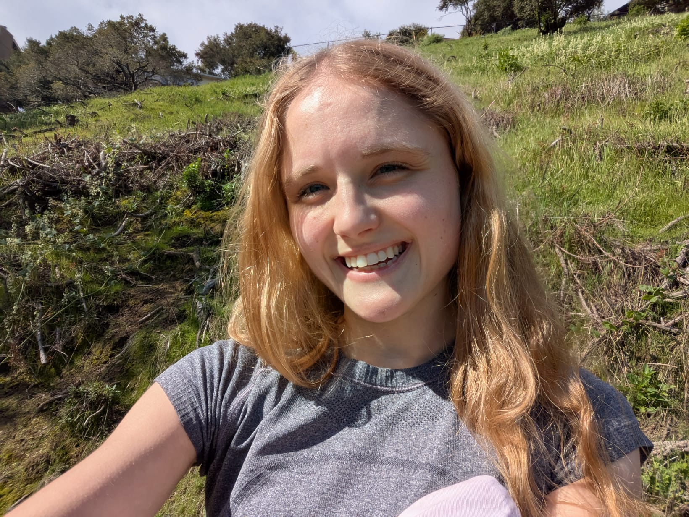

Hi, my name is Amelia
I'm a sophomore at Carnegie Mellon University, studying Information Systems with a minor in Artifical Intelligence. I interned last summer at the Statewide California Earthquake Center where I applied machine learning to interpolate seismic hazard data. Outside of classes, I'm a computer science and physics peer tutor for the Student Academic Success Center.